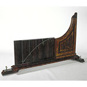

1. Introducción contextualizada
La cinemática es la parte de la mecánica que describe el movimiento de los cuerpos sin estudiar todavía las causas que lo producen. En una planta alimentaria, describir correctamente el movimiento no es un tema abstracto: permite estimar tiempos de residencia, sincronizar etapas de dosificación, ubicar bandejas o tolvas, ajustar velocidades de cintas, analizar arranques y frenadas, interpretar el movimiento de mezcladores, calcular aceleraciones en centrífugas y evaluar condiciones de seguridad.
Para describir un movimiento de manera técnica hay que indicar respecto de qué referencia se mide, qué coordenada cambia, en qué sentido ocurre, con qué rapidez, si la dirección de la velocidad cambia y si existe aceleración. En el lenguaje de la física, esto exige diferenciar cuidadosamente magnitudes escalares y vectoriales.
2. Objetivos de aprendizaje
Conceptuales
Comprender posición, desplazamiento, distancia, rapidez, velocidad y aceleración, distinguiendo su carácter escalar o vectorial.
Matemáticos
Usar ecuaciones cinemáticas, componentes vectoriales, límites y derivadas elementales para describir movimientos rectilíneos, bidimensionales y circulares.
Gráficos
Interpretar pendientes, áreas y curvaturas en gráficas \(x(t)\), \(v(t)\) y \(a(t)\).
Aplicados
Modelar situaciones de cintas transportadoras, dosificadores, túneles, caída de producto, mezcladores y centrífugas.
Infografías de síntesis y recorrido del apunte
Las infografías funcionan como un mapa visual de la Unidad 2. Conviene revisarlas antes de iniciar el estudio para anticipar los conceptos principales, y volver a ellas al finalizar para integrar teoría, ejemplos y simuladores.
1Medir el movimiento
Sistema de referencia, origen, ejes, unidades, escalares y vectores.
2Describir cambios
Posición, desplazamiento, distancia, rapidez, velocidad y aceleración.
3Modelar en línea recta
MRU, MRUV e interpretación de gráficas \(x(t)\), \(v(t)\) y \(a(t)\).
4Pasar al plano
Caída libre, Galileo, independencia de movimientos y trayectoria parabólica.
5Analizar rotación
Radián, velocidad angular, período, frecuencia, aceleraciones circular, tangencial y neta.
6Integrar en procesos
Cintas, llenadoras, mezcladores, centrífugas, túneles, poleas, ejercicios y simuladores.


3. Importancia de la cinemática para el técnico en alimentos
El técnico en alimentos trabaja con procesos donde el movimiento afecta directamente la calidad del producto. Una cinta excesivamente rápida puede reducir el tiempo de enfriamiento o provocar desalineación en una llenadora. Una aceleración brusca puede generar salpicaduras, roturas de envases o segregación de partículas. Una centrífuga con demasiadas rpm puede mejorar la separación, pero también aumentar solicitaciones mecánicas y riesgos operativos.
| Situación industrial | Variable cinemática relevante | Impacto técnico |
|---|---|---|
| Cinta transportadora | Rapidez lineal \(v\), posición \(x(t)\) | Tiempo de traslado, sincronización, acumulación de producto. |
| Llenadora | Velocidad y aceleración de avance | Precisión de llenado, repetibilidad, derrames. |
| Túnel de enfriamiento | Velocidad de cinta y tiempo de residencia | Temperatura final, inocuidad, uniformidad térmica. |
| Mezclador | Velocidad angular \(\omega\), frecuencia \(f\) | Homogeneidad, incorporación de aire, esfuerzo mecánico. |
| Centrífuga | Aceleración centrípeta \(a_c\) | Separación de fases, seguridad, integridad del equipo. |
4. Magnitudes escalares y vectoriales
Una magnitud escalar queda definida por un número y una unidad. La masa de una muestra, el tiempo de residencia, la temperatura de un producto y la distancia recorrida son ejemplos escalares. Una magnitud vectorial requiere módulo, dirección y sentido. La posición, el desplazamiento, la velocidad y la aceleración son vectoriales.
| Concepto | Tipo | Símbolo | Unidad SI | Interpretación |
|---|---|---|---|---|
| Posición | Vectorial | \(\vec r\) | m | Ubicación respecto de un origen elegido. |
| Desplazamiento | Vectorial | \(\Delta \vec r\) | m | Cambio neto de posición. |
| Distancia recorrida | Escalar | \(d\) o \(s\) | m | Longitud total de la trayectoria. |
| Velocidad | Vectorial | \(\vec v\) | m/s | Razon de cambio de posición con dirección y sentido. |
| Rapidez | Escalar | \(v=|\vec v|\) | m/s | Módulo de la velocidad. |
| Aceleración | Vectorial | \(\vec a\) | m/s² | Razon de cambio de la velocidad. |
5. Concepto de movimiento y sistema de referencia
Un cuerpo está en movimiento cuando su posición cambia con el tiempo respecto de un sistema de referencia. El sistema de referencia incluye un origen, ejes coordenados, sentido positivo y un reloj. Sin esta elección no se puede asignar signo a una posición, velocidad o aceleración.
En una cinta transportadora puede elegirse el eje \(x\) en el sentido de avance. Si un envase se mueve hacia la derecha, su posición puede aumentar; si retrocede, su posición disminuye. El signo no es una propiedad absoluta del movimiento: depende del eje elegido.
6. Posición, desplazamiento y distancia recorrida
Para distinguir con claridad estos tres conceptos conviene observar simultáneamente una trayectoria completa, los vectores posición y el vector desplazamiento. En el siguiente material audiovisual se muestra una partícula que va desde el punto A al punto B: el arco rojo representa el camino recorrido, la flecha violeta representa el desplazamiento y los vectores azules representan las posiciones inicial y final respecto del origen.
Video conceptual
Imagen de referencia

- Vectores de posición: \(\vec r_{ini}\) y \(\vec r_{fin}\) ubican a la partícula respecto del origen.
- Desplazamiento: \(\Delta \vec r\) une la posición inicial con la final.
- Camino recorrido: es la longitud total de la trayectoria roja.
6.1 Posición
La posición indica dónde se encuentra un cuerpo respecto de un origen. En una dimensión se usa una coordenada \(x(t)\). En dos dimensiones, una posición se representa mediante un vector.
6.2 Desplazamiento
El desplazamiento es el cambio de posición entre un instante inicial y uno final. No depende del camino recorrido, sino solo de los extremos.
En una dimensión:
6.3 Distancia recorrida
La distancia recorrida es la longitud total de la trayectoria. Es escalar y siempre es positiva o nula. Si un envase avanza 2 m y luego retrocede 0,5 m, la distancia recorrida es 2,5 m, pero el desplazamiento neto es 1,5 m hacia adelante.
| Comparación | Desplazamiento \(\Delta \vec r\) | Distancia recorrida \(d\) |
|---|---|---|
| Tipo | Vectorial | Escalar |
| Depende de la trayectoria | No | Sí |
| Puede ser negativa en una componente | Sí, como \(\Delta x<0\) | No |
| Ejemplo | De sensor a dosificador: \(+1,20\,\mathrm{m}\) | Longitud total recorrida por una cinta en un ciclo |
7. Rapidez, velocidad media y velocidad instantánea
En la siguiente animación se representa el movimiento de una partícula en un plano y se calcula la velocidad media vectorial entre dos instantes. Este material resulta útil para distinguir entre el valor escalar de la rapidez y el carácter vectorial de la velocidad.
Video conceptual
Imagen de referencia

- La expresión vectorial de la imagen indica que la velocidad media tiene componentes horizontal y vertical.
- La dirección de \(\vec v_{med}\) coincide con la del desplazamiento \(\Delta \vec r\), no con la tangente a la trayectoria.
- La velocidad instantánea, en cambio, se asocia a la tangente a la trayectoria en un punto.
7.1 Rapidez media
La rapidez media relaciona la distancia total recorrida con el tiempo empleado. Es escalar.
7.2 Velocidad media
La velocidad media es vectorial y relaciona el desplazamiento con el intervalo de tiempo.
En una dimensión:
7.3 Velocidad instantánea
La velocidad instantánea es el límite de la velocidad media cuando el intervalo de tiempo se hace cada vez más pequeño, puede interpretarse como la derivada de la posición respecto del tiempo.
Por componentes:
8. Aceleración media e instantánea
La aceleración describe el cambio de la velocidad. Como la velocidad es vectorial, puede cambiar por tres razones: cambia su módulo, cambia su dirección o cambian ambos.
8.1 Aceleración media
8.2 Aceleración instantánea
Por componentes:
9. Movimiento rectilíneo uniforme
El movimiento rectilíneo uniforme, MRU, ocurre cuando un cuerpo se mueve en línea recta con velocidad constante. Como la velocidad no cambia, la aceleración es nula.
En una dimensión:
Si se deriva:
10. Movimiento rectilíneo uniformemente variado
El movimiento rectilíneo uniformemente variado, MRUV, ocurre cuando la aceleración es constante en dirección, sentido y módulo. En una dimensión, esto significa \(a_x=\text{constante}\).
Integrando respecto del tiempo:
Como \(v_x=dx/dt\), una segunda integración conduce a:
También se usa la relación sin tiempo:
11. Interpretación de gráficas cinemáticas
11.1 Gráfica posición-tiempo
La pendiente de la gráfica \(x(t)\) representa la velocidad:
| Forma de \(x(t)\) | Interpretación |
|---|---|
| Recta creciente | Velocidad positiva constante. |
| Recta decreciente | Velocidad negativa constante. |
| Línea horizontal | Posición constante; el cuerpo está detenido. |
| Curva con pendiente creciente | La rapidez aumenta en el sentido positivo. |
| Curva con pendiente decreciente | La velocidad disminuye o se hace más negativa, según el caso. |
11.2 Gráfica velocidad-tiempo
La pendiente de \(v(t)\) es la aceleración y el área bajo la curva representa el desplazamiento.
11.3 Gráfica aceleración-tiempo
El área bajo \(a(t)\) representa el cambio de velocidad.
12. Caída libre como aceleración constante
La caída libre es un caso particular de movimiento con aceleración constante, donde la aceleración es la gravedad. Cerca de la superficie terrestre se toma:
Si el eje \(y\) es positivo hacia arriba:
Las ecuaciones son:
13. Galileo, caída libre e independencia de los movimientos
13.2 Caída Libre
Galileo y el comportamiento del cuerpo en movimiento
Galileo Galilei fue uno de los primeros científicos en aplicar un enfoque cuantitativo y experimental al estudio del movimiento. Para estudiar cómo varía la velocidad en cuerpos que caen, Galileo utilizó un plano inclinado para reducir la aceleración natural y poder medir con más precisión el comportamiento del cuerpo en movimiento. Este método le permitió demostrar que la aceleración es constante, y que la distancia recorrida por un cuerpo es proporcional al cuadrado del tiempo transcurrido.

Este plano inclinado, con cinco campanas pequeñas y un péndulo, fue diseñado para proporcionar una demostración experimental de la ley de Galileo de los cuerpos en caída libre. El aparato hace uso de otro importante principio físico descubierto por Galile
Experimento clásico de Galileo sobre un plano inclinado
En el link de GeoGebra se simula el experimento clásico de Galileo sobre un plano inclinado. Se observa un objeto que parte del reposo y desciende por un plano en ángulo, representando la aceleración constante. El plano inclinado reduce la aceleración respecto a la caída libre, permitiendo observar más claramente cómo varía la posición del cuerpo a lo largo del tiempo. En la simulación, el desplazamiento del objeto aumenta progresivamente en cada intervalo, lo cual evidencia que su velocidad también lo hace. Esto es coherente con el movimiento uniformemente acelerado (MRUA).
Simulador: posición en función del tiempo en el plano inclinado
Este modelo reproduce la idea central del experimento: una partícula parte del reposo y desciende por un plano inclinado. El ángulo modifica la componente de la gravedad paralela al plano y, por lo tanto, modifica la aceleración ideal.
Lectura de la tabla: Despl. 1 representa el desplazamiento parcial normalizado \((x_t-x_{t-1})/x_1\). Despl. 2 representa el desplazamiento acumulado normalizado \(x_t/x_1\). Si el movimiento parte del reposo con aceleración constante, aparecen los impares y los cuadrados.
Observaciones e interpretación física
- El objeto parte del reposo.
- La distancia recorrida en cada intervalo de tiempo es creciente.
- Se puede asociar gráficamente la relación d ∝ t².
- La aceleración es constante durante todo el recorrido.
Este experimento demuestra que, incluso cuando se disminuye la pendiente, el comportamiento del cuerpo sigue siendo el de un movimiento rectilíneo uniformemente acelerado. La relación fundamental que se verifica es:
Explicación teórica de la regla de los números impares
La regla de los números impares establece que los espacios recorridos en tiempos iguales por un cuerpo en caída libre desde el reposo forman una sucesión de números impares (1, 3, 5, 7, ...). Esto puede demostrarse a partir de la ecuación del movimiento uniformemente acelerado: x = (1/2) g t². Si se evalúan los desplazamientos en intervalos de tiempo iguales, se puede observar que la diferencia de posiciones consecutivas forma una progresión aritmética creciente. Esta regularidad revela cómo varía la velocidad del cuerpo en caída libre: aumenta de manera constante con el tiempo.
13.3 Independencia de los movimientos
Independencia de los movimientos
El principio de independencia de los movimientos establece que los movimientos en direcciones perpendiculares son independientes entre sí. Este principio también se entiende mejor al considerar que un movimiento compuesto puede descomponerse en dos (o más) movimientos simples e independientes, uno en cada dirección del espacio. Por ejemplo, en el caso de un proyectil, su movimiento puede analizarse como:
Un movimiento horizontal con velocidad constante (Movimiento Rectilíneo Uniforme, MRU).
- Un movimiento vertical con aceleración constante (Movimiento Rectilíneo Uniformemente Acelerado, MRUA), debido a la gravedad.
Estos movimientos ocurren simultáneamente, pero no se afectan entre sí. El desplazamiento total del objeto en cada instante es la suma vectorial de estos dos movimientos independientes. Matemáticamente, se expresa como:
donde x(t) es el desplazamiento horizontal, y(t) el vertical, v₀ₓ y v₀ᵧ las componentes iniciales de la velocidad, y g la aceleración de la gravedad. Esta descomposición permite analizar fenómenos complejos con herramientas simples.
Modelo en GeoGebra del principio de independencia
En el modelo se ilustra el principio de independencia de los movimientos a través de una simulación donde se observa un objeto que combina dos movimientos simultáneos:
- Movimiento horizontal uniforme (MRU): el objeto avanza en línea recta con velocidad constante en la dirección horizontal (eje X).
- Movimiento vertical uniformemente acelerado (MRUA): simultáneamente, el objeto cae bajo la influencia de la gravedad (eje Y), partiendo con velocidad vertical nula y acelerándose hacia abajo.
- Trayectoria compuesta (parabólica): al combinar ambos movimientos, la trayectoria total del objeto es una parábola. Esto evidencia que cada componente del movimiento puede analizarse por separado.
Los movimientos perpendiculares no se interfieren entre sí, lo que permite predecir trayectorias complejas mediante el análisis independiente de cada eje.
https://www.geogebra.org/m/syw6fbc3

El aparato muestra los efectos de la composición de un movimiento horizontal y uno vertical, un concepto fundamental de la teoría galileana del movimiento. Una base de madera sostiene un panel vertical cuya parte superior lleva dos rieles horizontales formados por un par de alambres metálicos. Un pequeño carro de latón se desplaza horizontalmente a lo largo de los rieles mediante una cuerda que sujeta un peso y pasa por una polea. Una segunda cuerda, también con un peso, se fija a un extremo de los rieles y pasa por una polea fijada al carro. Al tirar del carro, el desplazamiento de la polea unida a él hace que el peso se eleve en diagonal. Esto ilustra que la composición de dos movimientos perpendiculares produce una trayectoria diagonal. Esta última también se materializa mediante una ranura de madera clara en el panel vertical. En Leçons de physique expérimentale (París, 1743-1748), Jean-Antoine Nollet describió un instrumento similar en el que la trayectoria resultante de la combinación de los dos movimientos perpendiculares se trazaba con un lápiz sobre el panel. Procedencia: Colecciones de Lorena.
https://catalogue.museogalileo.it/object/ApparatusShowingCompositionMotion.html

https://catalogo.museogalileo.it/oggetto/ApparecchioDimostrareTraiettoriaParabolicaProietti.html
El aparato, procedente de las colecciones de Lorena y probablemente descrito por primera vez por Willem Jacob's Gravesande en Physices elementa mathematica, experimentis confirmata (III ed., Leiden, 1742), permite demostrar experimentalmente que un objeto pesado lanzado en proyección horizontal describe, debido a la aceleración de la gravedad, una trayectoria parabólica.
Una base de madera, equipada con tornillos niveladores, soporta un soporte con un canal de un cuarto de círculo y una tabla vertical, sobre la cual, a distancias iguales, se fijan cuatro anillos de latón a lo largo de una línea parabólica. La bola, al caer en el canal, experimenta una aceleración constante. Una vez que el canal deja de estar soportado, el movimiento horizontal de proyección de la bola se combina con el movimiento natural de caída, uniformemente acelerado; la bola avanza a partir de aquí siguiendo una trayectoria parabólica, como lo demuestra el hecho de que pasa por todos los anillos sucesivamente. El experimento confirma el descubrimiento de Galileo de la trayectoria parabólica de los proyectiles como resultado de la composición de la proyección horizontal y el movimiento de caída, definido por el científico pisano alrededor de 1609 y publicado por primera vez en el Cuarto Día de los Discursos y demostraciones matemáticas sobre dos Nuevas Ciencias (Leiden, 1638).
El experimento del mono y el cazador
Este clásico experimento mental ilustra de forma contundente el principio de independencia de los movimientos y la aceleración gravitatoria común a todos los cuerpos. La situación plantea el siguiente escenario:
- Un cazador apunta y dispara un proyectil (ya sea horizontal o con cierta inclinación) hacia un mono que cuelga de una rama.
- El disparo y la caída del mono ocurren de manera simultánea: el mono se suelta exactamente en el instante en que se dispara el proyectil.
Observaciones e interpretación física
Ambos cuerpos (el proyectil y el mono) inician su movimiento al mismo tiempo. Mientras el proyectil avanza con velocidad horizontal y cae por efecto de la gravedad, el mono realiza una caída vertical libre.
La trayectoria del proyectil es parabólica, producto de la combinación de un movimiento horizontal uniforme y un movimiento vertical uniformemente acelerado.
Simulador nativo: el mono y el cazador
Este simulador permite modificar la altura inicial del mono y el ángulo de disparo. El punto horizontal del mono se calcula para que la línea de mira inicial coincida con el ángulo elegido, es decir, el cazador apunta directamente al mono antes de que este se suelte.
El mono y el cazador
15. Movimiento circular aplicado a sistemas rotativos
El movimiento circular aparece en mezcladores, centrífugas, tambores rotativos, bombas, agitadores y equipos de clasificación. Aunque el módulo de la velocidad pueda ser constante, la dirección cambia en todo instante; por lo tanto, este tipo de movimiento permite distinguir entre desplazamiento angular, velocidad angular, aceleración angular, aceleración tangencial, aceleración centrípeta y aceleración neta.
15.1 Radián, arco y perímetro del círculo
El radián es la unidad natural de medida angular. Un ángulo de 1 radián es aquel que intercepta sobre la circunferencia un arco de longitud igual al radio. Por eso, el ángulo en radianes se define como la razón entre la longitud del arco y el radio.
Radián como relación entre arco y radio
Vínculo con el perímetro del círculo
| Fracción de vuelta | Ángulo en radianes | Ángulo en grados | Arco recorrido |
|---|---|---|---|
| Vuelta completa | \(2\pi\) | \(360^\circ\) | \(2\pi r\) |
| Media vuelta | \(\pi\) | \(180^\circ\) | \(\pi r\) |
| Cuarto de vuelta | \(\pi/2\) | \(90^\circ\) | \(\frac{\pi r}{2}\) |
| Sexto de vuelta | \(\pi/3\) | \(60^\circ\) | \(\frac{\pi r}{3}\) |
15.2 Desplazamiento angular, velocidad angular, período y frecuencia
Cuando un punto material gira alrededor de un eje, su posición angular cambia con el tiempo. Esa variación se describe mediante el desplazamiento angular \(\theta\), la velocidad angular \(\omega\), el período \(T\) y la frecuencia \(f\).
Video: velocidad tangencial en un movimiento circular
15.3 Aceleración angular y aceleración tangencial
Si la velocidad angular cambia con el tiempo, aparece la aceleración angular. Desde una perspectiva intuitiva, la aceleración angular indica qué tan rápido aumenta o disminuye la rapidez de giro de un sistema rotativo.
Cuando un punto de la circunferencia se mueve con aceleración angular \(\alpha\), aparece también una aceleración tangencial \(a_t\), que es la responsable del cambio en el módulo de la velocidad tangencial.
15.4 Aceleración centrípeta, tangencial y aceleración neta
Aun cuando el sistema gire a rapidez angular constante, la dirección de la velocidad tangencial cambia continuamente. Ese cambio de dirección requiere una aceleración centrípeta, siempre dirigida hacia el centro de la trayectoria.
En un movimiento circular no uniforme pueden coexistir ambas contribuciones: la aceleración tangencial \(a_t\), que cambia el valor de la rapidez, y la centrípeta \(a_c\), que cambia la dirección. La aceleración total o neta se obtiene por composición vectorial:
Aceleración neta en movimiento circular no uniforme

En la imagen se representa un punto que se mueve sobre una trayectoria circular. Los colores permiten distinguir las componentes de la aceleración:
- Magenta: aceleración tangencial at. Es tangente a la trayectoria y cambia el módulo de la velocidad.
- Rojo: aceleración centrípeta ac. Apunta hacia el centro y cambia la dirección de la velocidad.
- Azul: aceleración neta a. Es la resultante vectorial de at y ac.
- Líneas punteadas azules: indican el radio R y la circunferencia de referencia.
Resumen de magnitudes
| Magnitud | Símbolo | Unidad SI | Qué describe |
|---|---|---|---|
| Ángulo | θ | rad | Posición angular o abertura del arco respecto del radio. |
| Velocidad angular | ω | rad/s | Razon de cambio del ángulo. |
| Aceleración angular | α | rad/s² | Razon de cambio de la velocidad angular. |
| Velocidad tangencial | vt | m/s | Rapidez lineal sobre la circunferencia. |
| Aceleración tangencial | at | m/s² | Cambio del módulo de la velocidad tangencial. |
| Aceleración centrípeta | ac | m/s² | Cambio de dirección de la velocidad tangencial. |
| Aceleración neta | a | m/s² | Resultado vectorial de las componentes tangencial y centrípeta. |
16. Aplicaciones industriales integradas
| Equipo | Variable medida | Variable controlada | Riesgo si se ajusta mal |
|---|---|---|---|
| Cinta transportadora | Posición, velocidad lineal | Rapidez de avance | Desincronización, acumulación, caída incorrecta. |
| Llenadora | Tiempo de llegada, posición del envase | Tiempo de apertura, caudal, avance | Subllenado, sobrellenado, derrame. |
| Túnel de enfriamiento | Tiempo de residencia | Velocidad de cinta | Producto insuficientemente enfriado o pérdida de productividad. |
| Mezclador | rpm, tiempo de mezcla | Frecuencia de giro | Mezcla no homogénea, sobreprocesamiento. |
| Centrífuga | rpm, vibración | Velocidad angular | Separación deficiente, falla mecánica, riesgo operativo. |
17. Ejemplos resueltos paso a paso
Ejemplo 1. Cinta transportadora en MRU
Problema. Una cinta transporta envases desde un sensor hasta una llenadora ubicada a \(1,80\,\mathrm{m}\). La rapidez de la cinta es \(0,45\,\mathrm{m/s}\). Calcular el tiempo de llegada.
Interpretación industrial. La válvula de llenado debe prepararse aproximadamente 4 s después de que el envase activa el sensor, descontando retardos de actuadores y comunicación.
Ejemplo 2. Arranque de una llenadora con MRUV
Problema. Una cinta parte del reposo y alcanza \(0,60\,\mathrm{m/s}\) en \(3,0\,\mathrm{s}\), con aceleración constante. Calcular la aceleración y la distancia recorrida durante el arranque.
Interpretación industrial. Durante el arranque, el envase no recorre lo mismo que si la cinta hubiera estado desde el inicio a \(0,60\,\mathrm{m/s}\). Ignorar la etapa transitoria puede producir errores de sincronización.
Ejemplo 3. Producto que sale de una cinta y cae en una bandeja
Problema. Un producto sale horizontalmente de una cinta a \(0,80\,\mathrm{m/s}\) desde una altura de \(0,90\,\mathrm{m}\). ¿A qué distancia horizontal debe colocarse el centro de la bandeja?
Respuesta. La bandeja debe ubicarse aproximadamente a \(0,34\,\mathrm{m}\) del borde, sin considerar rebotes ni resistencia del aire.
Interpretación industrial. Si la velocidad de cinta aumenta a \(1,20\,\mathrm{m/s}\), el tiempo de caída sigue siendo \(0,428\,\mathrm{s}\), pero el alcance aumenta a \(0,51\,\mathrm{m}\).
Ejemplo 4. Gota de dosificador sobre cinta móvil
Problema. Una gota de salsa sale de una boquilla ubicada \(0,12\,\mathrm{m}\) sobre un envase que avanza con una cinta a \(0,30\,\mathrm{m/s}\). Si la gota parte sin velocidad vertical apreciable y sin velocidad horizontal respecto de la boquilla, ¿cuánto avanza el envase durante la caída?
Respuesta. El envase avanza aproximadamente \(4,7\,\mathrm{cm}\) mientras la gota cae. La boquilla o el disparo deben compensar ese avance.
Ejemplo 5. Centrífuga
Problema. Una centrífuga trabaja a \(1200\,\mathrm{rpm}\) con radio efectivo \(0,15\,\mathrm{m}\). Calcular \(f\), \(T\), \(\omega\), \(v_t\), \(a_c\) y \(a_c/g\).
Interpretación industrial. El producto experimenta una aceleración aproximada de \(242g\). Pequeños aumentos de rpm producen grandes aumentos de aceleración.
18. Simuladores interactivos
Estos simuladores permiten experimentar con los modelos cinemáticos principales de la unidad. La intención no es solamente obtener un número, sino observar cómo cambia el comportamiento del sistema cuando se modifican variables de proceso.
Simulador 1: Cinta transportadora
Qué hace. Modela el avance de un envase o producto sobre una cinta con movimiento rectilíneo uniforme.
- Objetivo: estimar tiempo de llegada entre dos estaciones de proceso.
- Variables a modificar: velocidad de cinta, distancia entre estaciones y tiempo mostrado en la gráfica.
- Qué observar: la pendiente de la gráfica \(x(t)\), el tiempo de llegada y el efecto de aumentar la velocidad sobre el tiempo de residencia.
Simulador 2: Llenadora / MRUV
Qué hace. Representa una etapa de arranque o frenado con aceleración constante, típica de una línea de llenado o dosificación.
- Objetivo: calcular aceleración y distancia recorrida durante una etapa transitoria.
- Variables a modificar: velocidad inicial, velocidad final y tiempo de aceleración o frenado.
- Qué observar: la pendiente de la gráfica \(v(t)\), la distancia transitoria y la advertencia de aceleración alta.
Simulador 3: Caída desde cinta
Qué hace. Simula un producto que abandona una cinta transportadora y cae hacia una bandeja, tolva o envase.
- Objetivo: aplicar la independencia de movimientos entre el eje horizontal y el eje vertical.
- Variables a modificar: altura de caída, velocidad horizontal, velocidad vertical inicial y gravedad.
- Qué observar: el tiempo de caída, el alcance horizontal y cómo cambia la trayectoria cuando aumenta la velocidad de la cinta.
Simulador 4: Centrífuga / mezclador
Qué hace. Calcula magnitudes circulares de un punto ubicado a cierta distancia del eje de giro.
- Objetivo: relacionar radio, rpm, frecuencia, período, velocidad tangencial y aceleración centrípeta.
- Variables a modificar: radio del equipo y rpm.
- Qué observar: cómo la aceleración centrípeta crece fuertemente al aumentar las rpm y por qué esto importa en seguridad mecánica.
Simulador 5: Dos poleas unidas por una correa
Qué hace. Modela dos poleas conectadas por una correa sin cruce. La polea motriz transmite la velocidad lineal de la correa a la polea conducida.
- Objetivo: observar cómo cambia la velocidad angular de la polea conducida cuando los radios son distintos.
- Variables a modificar: radio de la polea motriz, radio de la polea conducida, rpm de mando y porcentaje de deslizamiento.
- Qué observar: si la polea conducida tiene menor radio, gira a mayor rpm; si tiene mayor radio, gira a menor rpm. La velocidad lineal de la correa es común.
En una planta alimentaria este modelo aparece en transmisiones de cintas, rodillos, dosificadores, sistemas de arrastre y mecanismos de sincronización.
19. Errores frecuentes
Distancia vs desplazamiento
La distancia suma el camino; el desplazamiento mira solo inicio y fin.
Rapidez vs velocidad
La rapidez no tiene dirección; la velocidad sí.
Signo de \(g\)
\(g\) es módulo. El signo depende del eje.
MRU vs MRUV
No usar \(x=x_0+vt\) cuando hay aceleración.
Movimiento circular
Puede haber rapidez constante y aceleración distinta de cero.
Independencia de movimientos
La caída vertical no cambia \(v_x\) si \(a_x=0\).
20. Preguntas conceptuales
- ¿Qué variable física se controla al ajustar la velocidad de una cinta transportadora?
- ¿Qué ocurre con el alcance horizontal de un producto si aumenta la velocidad de la cinta?
- ¿Por qué una centrífuga tiene aceleración aunque mantenga rpm constantes?
- ¿Qué diferencia hay entre decir que un envase recorrió 2 m y que su desplazamiento fue 2 m?
- ¿Qué variable debería medir un sensor para sincronizar una llenadora con una cinta?
- ¿Cómo afecta una aceleración brusca a envases parcialmente llenos?
- ¿Por qué el tiempo es la variable común en el análisis de movimiento en \(x\) e \(y\)?
21. Ejercicios numéricos propuestos con respuestas orientativas
| # | Enunciado | Respuesta orientativa |
|---|---|---|
| 1 | Una cinta se mueve a \(0,50\,\mathrm{m/s}\). ¿Cuánto tarda un envase en recorrer \(3,0\,\mathrm{m}\)? | \(t=6,0\,\mathrm{s}\). |
| 2 | Una línea acelera de 0 a \(0,80\,\mathrm{m/s}\) en 4 s. Calcular \(a\). | \(a=0,20\,\mathrm{m/s^2}\). |
| 3 | Una llenadora frena de \(0,60\,\mathrm{m/s}\) a 0 en 2 s. Calcular distancia de frenado. | \(\Delta x=0,60\,\mathrm{m}\). |
| 4 | Un producto cae desde \(0,80\,\mathrm{m}\). Calcular tiempo de caída. | \(t\approx0,40\,\mathrm{s}\). |
| 5 | Sale de una cinta a \(1,0\,\mathrm{m/s}\) desde \(0,80\,\mathrm{m}\). Calcular alcance horizontal. | \(R\approx0,40\,\mathrm{m}\). |
| 6 | Un mezclador gira a 300 rpm. Calcular frecuencia y período. | \(f=5\,\mathrm{Hz}\), \(T=0,20\,\mathrm{s}\). |
| 7 | Para \(r=0,20\,\mathrm{m}\) y 600 rpm, calcular \(\omega\). | \(\omega\approx62,8\,\mathrm{rad/s}\). |
| 8 | Con \(r=0,20\,\mathrm{m}\) y \(\omega=62,8\,\mathrm{rad/s}\), calcular \(a_c\). | \(a_c\approx789\,\mathrm{m/s^2}\approx80g\). |
22. Actividad práctica o simulada
Análisis cinemático de una línea de transporte y dosificación
El estudiante deberá analizar una línea simplificada con cinta, sensor, dosificador y bandeja de recepción. Deberá definir sistema de referencia, identificar escalares y vectores, estimar velocidad de cinta, calcular tiempos, analizar arranque o frenado, estudiar una caída desde una cinta e interpretar gráficas generadas por los simuladores.
- Definir origen, eje positivo y unidades.
- Identificar \(x\), \(\Delta x\), \(d\), \(v\), \(\vec v\), \(a\) y \(\vec a\).
- Calcular el tiempo desde sensor a dosificador.
- Determinar el avance de un envase durante el tiempo de caída de una gota.
- Proponer una corrección de sincronización.
- Relacionar resultados con calidad, seguridad y eficiencia.
23. Actividad integradora
Analizar una línea alimentaria compuesta por cinta transportadora, dosificador, zona de caída, túnel de enfriamiento y mezclador rotativo final. El informe debe incluir identificación de movimientos rectilíneos y circulares, distinción de escalares y vectores, cálculo de tiempos, velocidades y aceleraciones, interpretación de gráficas, detección de posibles errores operativos y justificación de decisiones técnicas.
24. Resumen final
- El movimiento se define respecto de un sistema de referencia.
- Posición, desplazamiento, velocidad y aceleración son vectoriales.
- Distancia recorrida y rapidez son escalares.
- La velocidad instantánea es \(d\vec r/dt\); la aceleración instantánea es \(d\vec v/dt=d^2\vec r/dt^2\).
- En MRU, \(\vec v\) es constante y \(\vec a=0\).
- En MRUV, \(\vec a\) es constante.
- En caída libre, \(a_y=-g\) si \(y\) es positivo hacia arriba.
- En movimiento bidimensional, los ejes se analizan por componentes y comparten el mismo tiempo.
- En movimiento circular uniforme, la rapidez puede ser constante pero existe aceleración centrípeta.
25. Glosario breve
| Término | Definición |
|---|---|
| Cinemática | Descripción del movimiento sin estudiar sus causas. |
| Sistema de referencia | Origen, ejes, sentido positivo y reloj usados para medir. |
| Posición | Ubicación de un cuerpo respecto de un origen. |
| Desplazamiento | Cambio vectorial de posición. |
| Distancia recorrida | Longitud total de la trayectoria. |
| Rapidez | Módulo de la velocidad. |
| Velocidad | Derivada de la posición respecto del tiempo. |
| Aceleración | Derivada de la velocidad respecto del tiempo. |
| Período | Tiempo de una vuelta o ciclo. |
| Frecuencia | Número de ciclos por segundo. |
| Aceleración centrípeta | Aceleración dirigida hacia el centro en movimiento circular. |